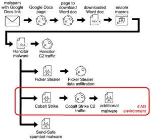

The attacks used in this example are:
Hancitor
Cobalt Strike
Ficker Stealer
Hancitor is a famous malware loader that follows a similar pattern as:
Attackers use tricks to obfuscate their C2 loCs. In the case of Hancitor, it is encrypted into a large chunk of data.
Cobalt Strike is a framework tool that allows users to evade threat detection.
Users can also create advanced and flexible traffic profiles using Cobalt Strike's Beacon C2 communication.
The Beacon's C2 traffic allows users to easily and effectively cloak malicious traffic as normal/benign traffic.
Ficker Stealer is a malware that is used to steal information such as: login credentials, credit card information, browser information, ect.
Here is a layout of how the Ficker Stealer could operate: